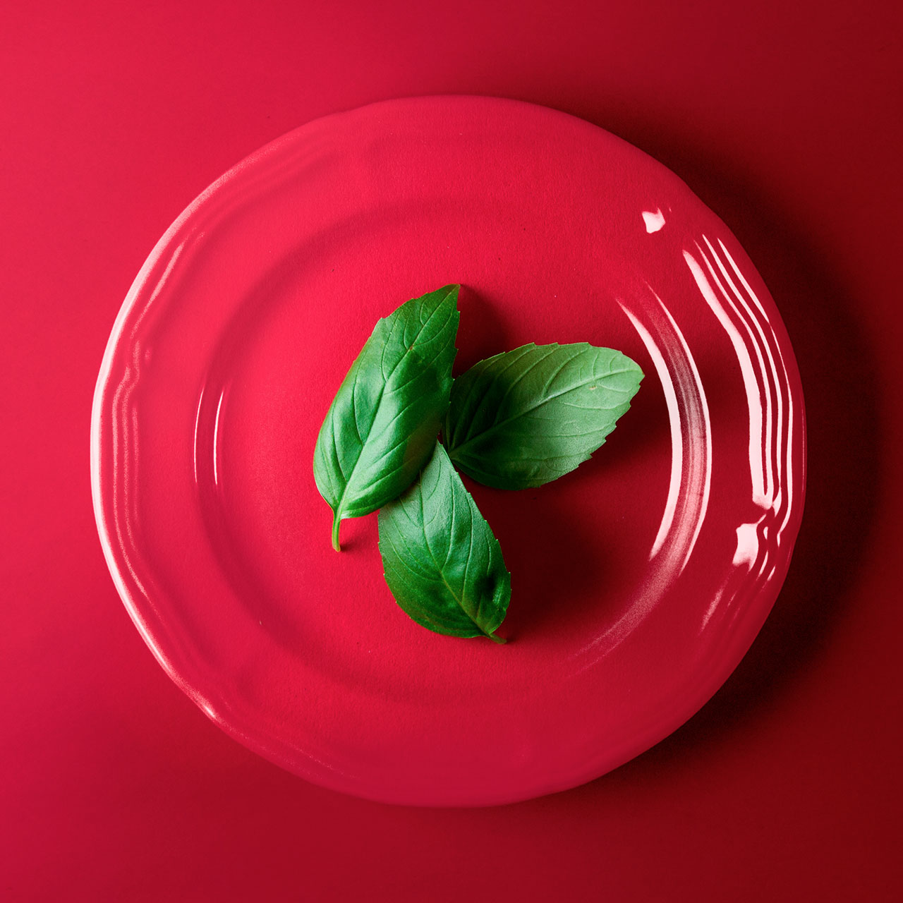

How do I use
- Basil?
- Cinnamon?
- Paprika?
- Chives?
- Cayenne?
- Oregano?

Sweet Basil
Origin
India
Taste
Extremely aromatic with a scent of pepper, anise, mint, and a robust licorice flavor.
Pair with vegetables
Bell peppers, eggplant, potatoes, tomatoes, zucchini
Pair with protein
Cheeses, chicken, fish, pork
Pair with herbs / spices
Garlic powder, rosemary, thyme, marjoram, oregano